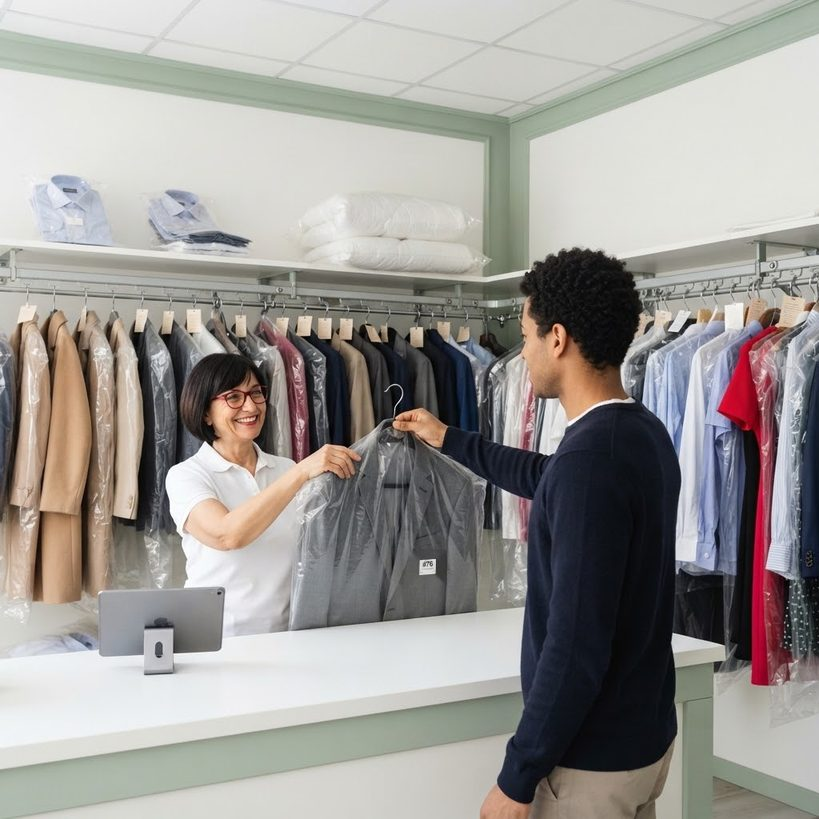
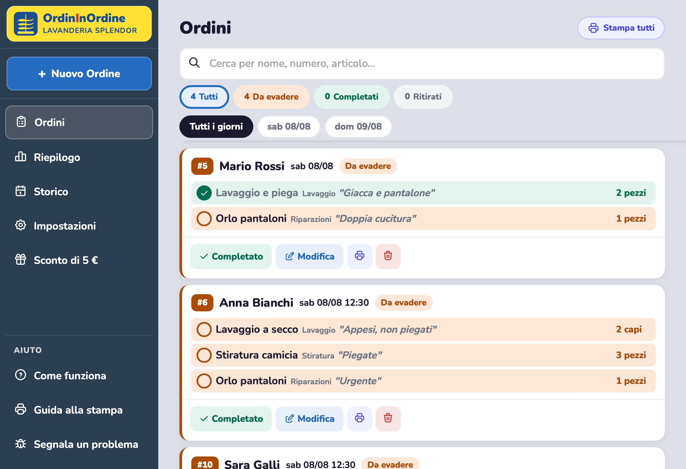
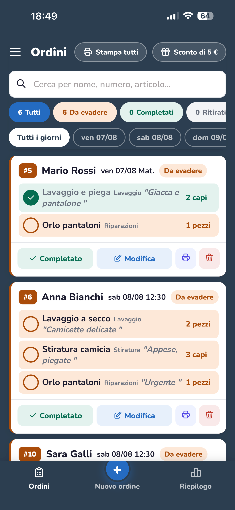
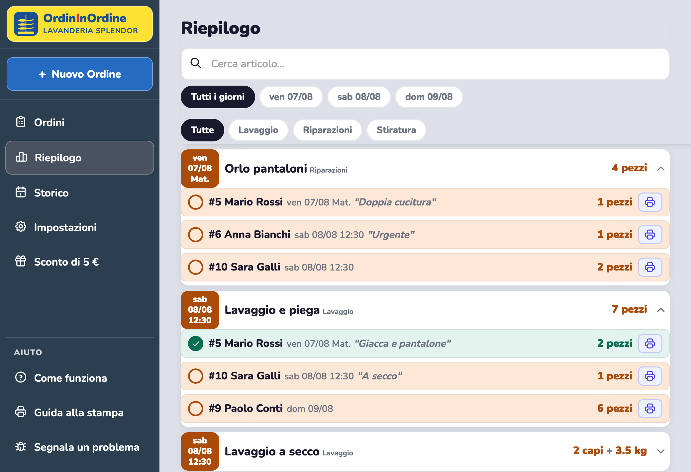
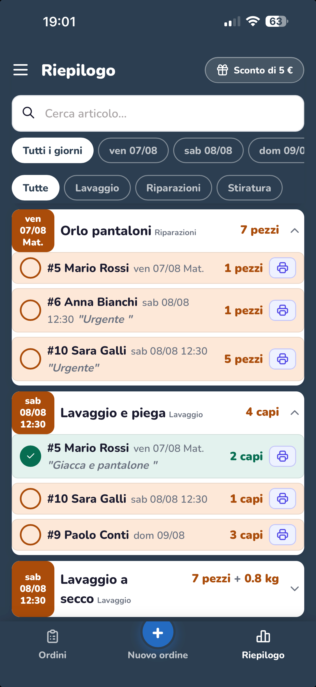

Cerchi un modo più semplice per gestire gli ordini della tua lavanderia?
Gestione ordini per lavanderie e tintorie
Continua a prendere gli ordini come hai sempre fatto: al banco, al telefono, su WhatsApp. Poi una foto al foglietto, uno screenshot della chat o due parole dettate a voce, e l’app ti prepara l’ordine: tu controlli e lo aggiungi alla lista. Nel riepilogo trovi tutto aggregato per servizio, con in cima quello che serve prima: sai subito cosa preparare e per chi. Senza costosi e complicati gestionali.




Fotografa il foglietto, fai uno screenshot della chat o detta l’ordine a voce: l’app lo prepara, tu controlli e lo aggiungi alla lista.
Ordini e servizi si mettono in fila in base al giorno e all’ora di ritiro, e quelli urgenti sono evidenziati in rosso.
Natale, Pasqua, giorni di massima attività: confronta con gli anni passati e organizzati per tempo.
Per organizzare meglio il lavoro, puoi stampare l'etichetta dell'intero ordine o di un singolo servizio. Scopri come →
Tutto sincronizzato in tempo reale. Puoi ricevere notifiche su nuovi ordini aggiunti o su quelli urgenti da evadere.
oppure 99 € / anno (due mesi gratis)
Inizia gratisDisdici quando vuoi, riattiva quando vuoi: i tuoi dati restano al loro posto.